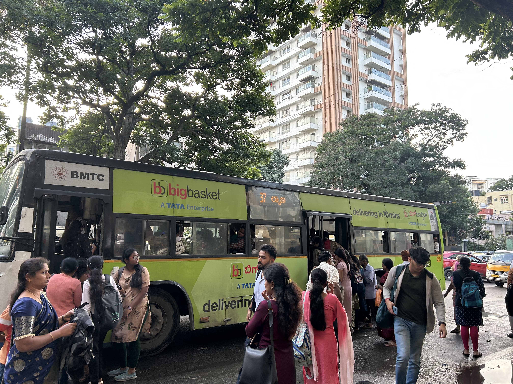
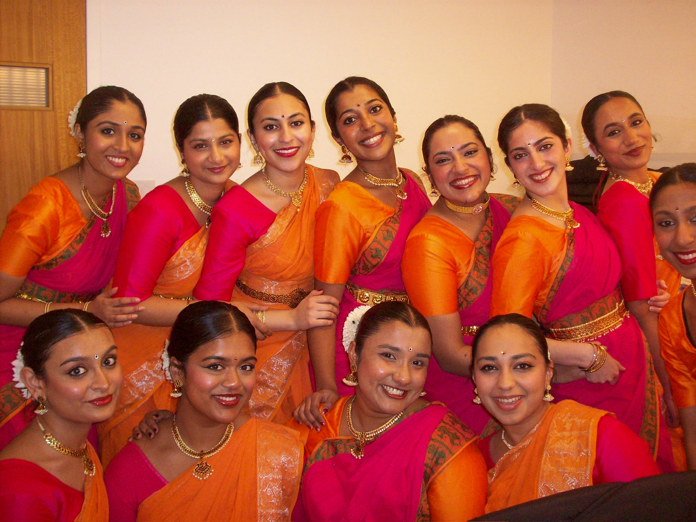

I’m Deepika Kannan.
I build software to make cities more livable.
I graduated from the University of Pennsylvania with degrees in Computer Science and Urban Studies. I'm exploring opportunities to build software that serves the public good.
Featured Projects.
Selected work in software, urban research, and creative leadership.

Published Paper on Rideshare Apps in India
Research on how rideshare platforms shape social hierarchies in Bengaluru, supported by a competitive $3,500 Hassenfeld Grant. Published in the Barnard-Columbia Urban Review.
Tools & Methods
Project DetailsGetHomeSafe
A platform that helps women find someone to walk home with. I implemented Google Maps integration and a matching algorithm for live pairing, collaborating with two classmates.
Tools & Methods
Project Details
Leading Penn Thillana’s Performance at Carnegie Hall
As one of three captains, I helped lead an 18-dancer performance at Carnegie Hall, bringing together choreography, soundtrack development, and rehearsals.
Skills & Methods
Performance Details